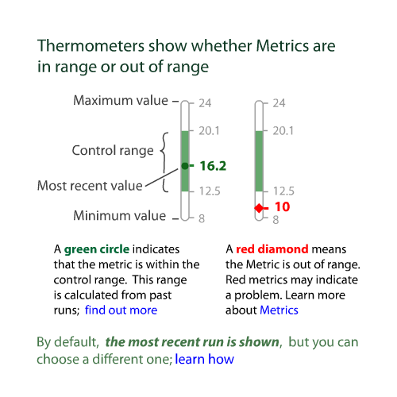
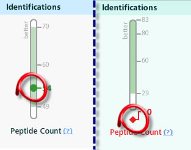

On the MassQC Dashboard , each metric is represented by a “thermometer” that shows the current value (54 in the example below) and the normal or “control” range (49 to 70 in the example):

If the metric value falls within the control range, as in the above example, then MassQC shows the value in green .
If the metric value falls outside the control range, then MassQC flags the metric in red (see above picture).
The whole point of the MassQC Dashboard is that it is unlikely that a metric value will be outside the control range unless something is wrong with the LC-MS/MS.
For more information on Control Ranges, go here
| < Previous | Next > |
If you have questions, comments and/or insights about MassQC , you can share them on the MassQC Users Forum .